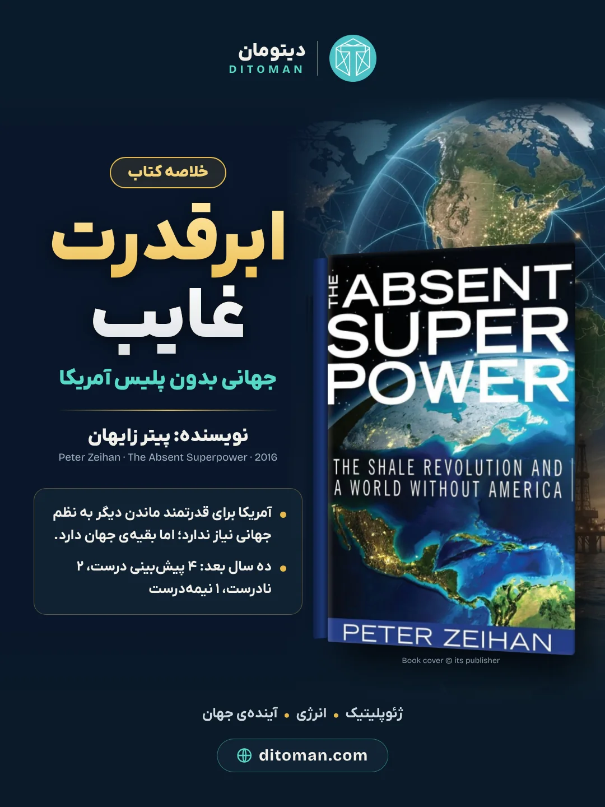
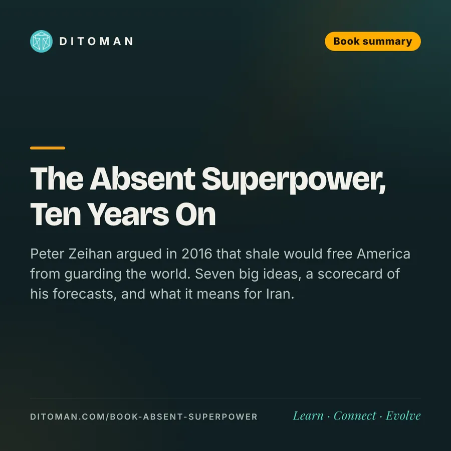

خلاصه کتاب «ابرقدرت غایب»؛ جهانی بدون پلیس آمریکا، ده سال بعد
Book summary: The Absent Superpower, ten years on
پیتر زایهان در ۲۰۱۶ گفت انقلاب شیل آمریکا را از نگهبانی جهان بینیاز میکند. هفت ایدهی اصلی کتاب، جدول درستی پیشبینیها تا امروز، و معنایش برای ایران.
Peter Zeihan argued in 2016 that shale would free America from guarding the world. Seven big ideas, a scorecard of his forecasts, and what it means for Iran.
در یک نگاه
| مشخصه | توضیح |
|---|---|
| نام کتاب | The Absent Superpower: The Shale Revolution and a World Without America |
| ترجمهی عنوان | ابرقدرت غایب؛ انقلاب شیل و جهانی بدون آمریکا |
| نویسنده | پیتر زایهان، تحلیلگر ژئوپلیتیک آمریکایی |
| انتشار | پایان ۲۰۱۶؛ ناشر: Zeihan on Geopolitics |
| موضوع | انرژی، جغرافیا، جمعیت و آیندهی نظم جهانی |
| کتاب قبلی نویسنده | The Accidental Superpower (۲۰۱۴) |
ایدهی اصلی در یک جمله: آمریکا برای قدرتمند ماندن دیگر به نظم جهانی نیاز ندارد؛ اما بسیاری از کشورهای دیگر برای ثروتمند ماندن هنوز به آن نیاز دارند.
این صفحه خلاصه و تحلیل دیتومان از کتاب است، نه متن کتاب. برای خواندن کتاب کامل، نسخهی اصلی را از سایت نویسنده یا کتابفروشیها تهیه کنید.
1. داستان از کجا شروع میشود؟
پس از جنگ جهانی دوم، آمریکا معاملهای با متحدانش کرد: «ما از کشتیهای شما در همهی اقیانوسها محافظت میکنیم و بازارمان را به رویتان باز میکنیم؛ شما در برابر شوروی کنار ما باشید.»
زایهان این را «نظم برتون وودز» مینامد. نتیجهاش شگفتانگیز بود: ژاپن، آلمان، کرهی جنوبی و بعدها چین، بدون آنکه نیروی دریایی بزرگی داشته باشند، به اقتصادهای صادراتی غولپیکر تبدیل شدند.
پرسش کتاب این است: وقتی جنگ سرد تمام شده و آمریکا دیگر به نفت دیگران نیاز ندارد، چرا باید همچنان هزینهی این نگهبانی را بپردازد؟
2. هفت ایدهی اصلی کتاب
- ۱. انقلاب شیل: حفاری افقی و شکست هیدرولیکی، نفت و گاز محبوس در سنگهای شیل آمریکا را آزاد کرد. به گفتهی زایهان، این تحول آمریکا را از وابستگی به نفت خاورمیانه رها میکند و انگیزهاش را برای حفاظت از مسیرهای نفتی جهان کم میکند
- ۲. جغرافیا سرنوشت است: دو اقیانوس در دو طرف، همسایههای بیخطر، بزرگترین شبکهی رودخانههای قابل کشتیرانی جهان در حوضهی میسیسیپی و زمین کشاورزی فراوان. زایهان میگوید هیچ کشور دیگری این ترکیب را ندارد
- ۳. جهانیشدن طبیعی نیست: تجارت آزاد جهانی یک «حالت طبیعی» نیست؛ محصول امنیتی است که نیروی دریایی آمریکا فراهم کرد. اگر این امنیت برداشته شود، حملونقل، بیمه و زنجیرههای تأمین گرانتر و ناامنتر میشوند
- ۴. چین آسیبپذیرتر از ظاهرش: چین به واردات انرژی و مواد خام از راه دریا، بازارهای صادراتی دوردست و جمعیتی که سریع پیر میشود وابسته است. از نگاه زایهان، چین بیش از هر کشوری از نظم آمریکایی سود برده و بیش از همه از پایانش آسیب میبیند
- ۵. روسیه به دنبال مرزهای امن: دشتهای باز اروپای شرقی دفاع از روسیه را سخت میکنند و جمعیتش رو به کاهش است. زایهان پیشبینی کرد روسیه پیش از آنکه پنجرهی جمعیتیاش بسته شود، برای رسیدن به مرزهای قابل دفاع، بهویژه در اوکراین، دست به اقدام میزند
- ۶. خلیج فارس، میدان رقابت: با کم شدن حضور آمریکا، رقابت ایران و عربستان شدیدتر میشود و امنیت صادرات نفت خلیج فارس زیر سؤال میرود. بیشترین آسیب را واردکنندگان نفت، یعنی اروپا و شرق آسیا، میبینند، نه آمریکا
- ۷. جمعیت، تقدیر اقتصاد: پیری سریع اروپا، ژاپن، کره و چین نیروی کار و مصرف را کم میکند. ساختار جمعیتی آمریکا، به لطف نسل جوانتر و مهاجرت، مساعدتر است
3. ده سال بعد: کدام پیشبینیها درست درآمد؟
| پیشبینی کتاب | تا نوامبر ۲۰۲۶ | نتیجه |
|---|---|---|
| خودکفایی انرژی آمریکا با شیل | رکورد ۱۳٫۶ میلیون بشکه در روز در ۲۰۲۵ (EIA) | ✓ درست |
| حملهی روسیه به اوکراین | فوریهی ۲۰۲۲ | ✓ درست |
| فاصله گرفتن آمریکا از نقش پلیس جهان | «اول آمریکا» و تعرفهها | ✓ تا حد زیادی |
| ناامنی خلیج فارس، آسیب به واردکنندگان | بسته شدن هرمز در ۲۰۲۶ | ✓ درست |
| کنار کشیدن آمریکا از خاورمیانه | درگیری مستقیم در جنگ ۲۰۲۶ | ✗ فعلاً نادرست |
| فروپاشی سریع چین | کندی رشد، بدون فروپاشی | ✗ بدبینانه |
| معکوس شدن جهانیشدن | جنگ تجاری، اما تجارت هنوز عظیم | ~ نیمهدرست |
- جزئیات: تولید نفت خام آمریکا از حدود ۵ میلیون بشکه در ۲۰۰۸ به رکورد ۱۳٫۶ در ۲۰۲۵ رسید و پیشبینی ۲۰۲۶ حدود ۱۳٫۸ است؛ آمریکا از ۲۰۲۰ صادرکنندهی خالص نفت و فرآورده است. در جنگ ۲۰۲۶، آمریکا مستقیماً درگیر شد و محاصرهی دریایی گذاشت، و بسته شدن هرمز بزرگترین اختلال عرضهی نفت ثبتشده بود
جمعبندی: زایهان در جهت تحولات خوب دیده، اما در سرعت و شدت آنها، بهویژه دربارهی چین و عقبنشینی کامل آمریکا، اغراق کرده است.
4. کتاب و ایران
- پیشبینی: کتاب از رقابت شدیدتر ایران و عربستان و ناامنی خلیج فارس پس از کاهش حضور آمریکا میگوید
- واقعیت ۲۰۲۶: جنگ و بسته شدن هرمز نشان داد خلیج فارس هنوز قلب بازار انرژی جهان است. اما برخلاف پیشبینی، آمریکا غایب نبود؛ نقش مستقیمی داشت
- درس برای ایران: در جهانی که امنیت مسیرهای دریایی دیگر «مجانی» نیست، ارزش جغرافیای ایران، از هرمز تا کریدورهای زمینی شمالجنوب و شرقغرب، بیشتر میشود. همینطور ارزش ثبات منطقهای و دیپلماسی
- جمعیت: تحلیل جمعیتی زایهان دربارهی ایران هم صدق میکند: کاهش سریع تولد و پیری در راه است. گزارش جمعیت ایران دیتومان را ببینید
5. نقدها؛ چرا همه با زایهان موافق نیستند؟
- جبرگرایی جغرافیایی: منتقدان میگویند او نقش فناوری، نهادها، سیاست و انتخاب انسانها را دستکم میگیرد
- پیشبینیهای بسیار قطعی: پیشبینی فروپاشی چین بارها از سوی او مطرح شده و هنوز رخ نداده است
- نگاه آمریکامحور: کتاب گاهی آمریکا را تقریباً شکستناپذیر و دیگران را بسیار شکننده نشان میدهد
- ارزش واقعی کتاب: با این همه، چارچوب او، یعنی دیدن جهان از دریچهی جغرافیا، انرژی و جمعیت، برای فهم اخبار امروز بسیار کاربردی است
6. برای چه کسی مفید است؟
- کسانی که میخواهند بفهمند چرا قیمت نفت، طلا و ارز با خبرهای ژئوپلیتیک تکان میخورد
- کسبوکارهایی که به واردات، صادرات و زنجیرهی تأمین وابستهاند
- هر کسی که میخواهد خبرهای جهان را با یک نقشهی ذهنی ساده دنبال کند
7. سه جملهی کلیدی (به زبان دیتومان)
- نظم جهانی هدیه نبود؛ معامله بود.
- کشوری که انرژی و غذایش را خودش تأمین کند، در جهان آشفته آسیبپذیری کمتری دارد.
- جغرافیا عوض نمیشود؛ اما معنایش با فناوری عوض میشود.
8. نگاه دیتومان
ارزش این کتاب در درست بودن همهی پیشبینیهایش نیست؛ در پرسشی است که میپرسد: اگر نگهبان جهان خسته شود، چه کسی هزینهی امنیت را میدهد؟
ده سال بعد، این پرسش از هر زمان دیگری واقعیتر است.
9. بخش تازهی دیتومان: خلاصه کتاب
این اولین خلاصهی کتاب در دیتومان است. هر چند وقت یک کتاب مهم در اقتصاد، فناوری، انرژی و ژئوپلیتیک را خلاصه میکنیم و با اخبار امروز میسنجیم. همهی خلاصهها در صفحهی خلاصه کتابها جمع میشوند.
خلاصهها نوشتهی دیتومان و برای آشنایی و تشویق به خواندن کتاب اصلیاند؛ جایگزین کتاب نیستند. تصویر جلد فقط برای معرفی کتاب آمده و حقوق آن متعلق به ناشر است.
بیشتر بخوانید
منابع
- Peter Zeihan: The Absent Superpower (author’s page)
- Goodreads: The Absent Superpower
- Readings: The Absent Superpower, ISBN 9780998505206
- U.S. EIA: U.S. crude oil production (Today in Energy)
- World Oil: U.S. crude output on track for record 13.8 MMbpd in 2026
- CFA Institute: Peter Zeihan on Geopolitics, a world that will fragment
آخرین بازبینی: ۲۹ آبان ۱۴۰۵. این صفحه خلاصه و تحلیل دیتومان است و جایگزین کتاب نیست؛ تصویر جلد فقط برای معرفی کتاب آمده و حقوق آن متعلق به ناشر است.